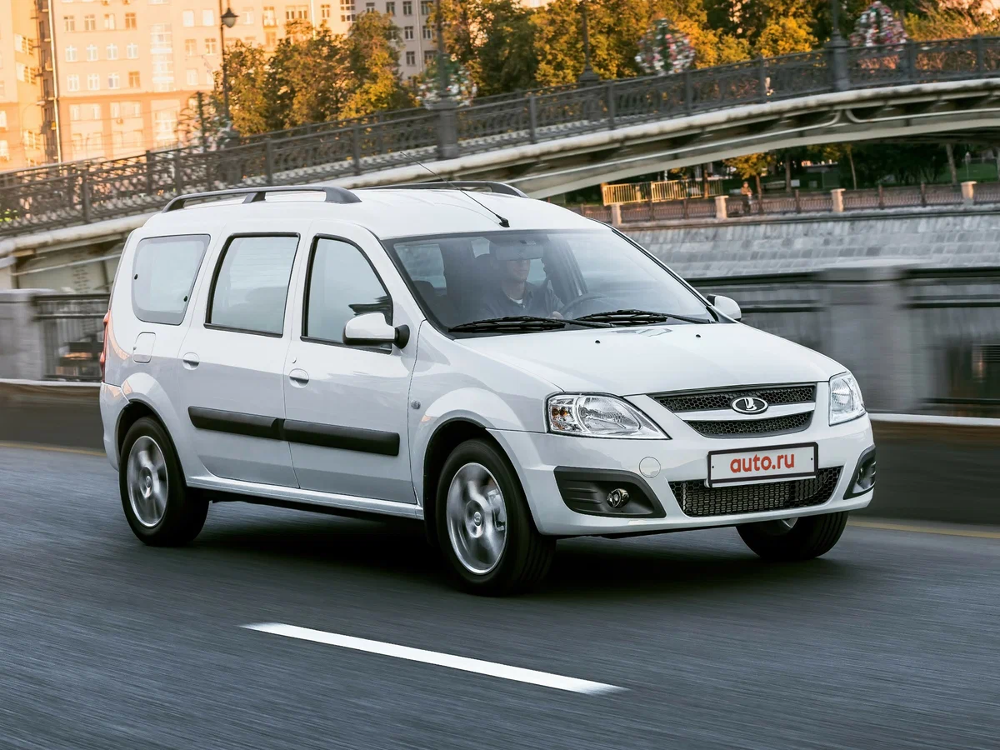
LADA Largus (лат. largus; Лада Ларгус) - российский автомобиль малого класса, представляющий собой переименованный и приспособленный под российский рынок автомобиль Dacia Logan MCV первого поколения (2006 г.), созданный на платформе «В0» и выпускавшийся в Румынии. Является продуктом СП «Renault-Nissan-АвтоВАЗ». С 2015 года модель отличалась от исходного иностранного автомобиля комплектацией двигателями от платформы «Лада Гамма», разработки Волжского автомобильного завода.
Первый автомобиль LADA Largus сошёл с конвейера «АвтоВАЗ» 17 июня 2011 года. Причём первые собранные экземпляры данной модели предназначались для заводских испытаний. Серийное производство Largus началось 4 апреля 2012 года на новой линии B0, первом совместном проекте «АвтоВАЗа» и альянса Renault-Nissan. Линия рассчитана на выпуск 70 тыс. LADA Largus, 70 тыс. Nissan Almera и 140 тыс. машин марки Renault, инвестиции в её создание составили около 400 млн евро. В 2019 году выпуск автомобиля в исходном виде завершён.
Первая серия LADA Largus выпускалась с 2012 по 2021 год.
Подразделение АВТОВАЗа «ВИС-АВТО» на платформе LADA Largus выпускает специальные коммерческие фургоны и авторефрижераторы различного назначения.
В 2019 году LADA Largus прошёл лёгкий фейслифт. Изменилась решётка радиатора, на ней же появилась трёхмерная ладья, также как и на руле и колёсных колпаках. Сзади шильдик "LADA" стал больше.
В феврале 2021 года началось серийное производство рестайлингового Largus. Автомобиль получил новую переднюю часть кузова в «икс-стиле»: изменились передний бампер, капот, передние крылья, решётка радиатора, фары, диски колёс и наружные зеркала; новые детали интерьера: руль, панель приборов и передние сиденья с развитой боковой поддержкой. Базовый двигатель ВАЗ-11189 был заменён новым двигателем ВАЗ-11182.
В мае 2024 года возомбновлено серийное производтсво модели на автозаводе Лада Ижевск, к октябрю 2024 года выпущено более 25 тысяч автомобилей LADA Largus.
Пассажирский универсал предлагается в 5- и 7-местном исполнении. Объём багажника у пятиместной версии Largus составляет 560 л. У семиместного автомобиля он равен всего 135 л.
Грузовой фургон, в отличие от Largus R90, модель F90 имеет глухие задние и боковые панели.
Как и обычный Largus, предлагается в 5- и 7-местном вариантах. В 2016 году, в честь своего 50-летия АвтоВАЗ представил Largus Cross Black Edition. От стандартной версии отличается новыми чёрными дисками, крышей и боковыми зеркалами.
Версия автомобиля с ГБО, запущена в производство в январе 2019 года. В 2021 году выпуск временно приостановлен.
В декабре 2022 года в Ижевске началось опытное производство электрической версии LADA Largus. Планируется, что модель e-Largus будет выпускаться как в пассажирской версии, так и в версии коммерческого фургона. Доля использования комплектующих в LADA e-Largus от российских производителей составляет 50 %.
25 сентября 2024 года «АвтоВАЗ» на своей площадке Lada Ижевск запустил выпуск электромобиля Lada e-Largus, который позиционировался как первый российский электромобиль с отечественной батареей глубокой локализации. Планируется производство пассажирской версии с запасом хода 420 км и коммерческого универсала — от 320 км. Уровень локализации электромобиля превышает 50%.
Начальная цена электрического Lada e-Largus с учетом субсидии для покупателей электромобилей составляет 2 990 000 рублей. Эта стоимость относится к грузовой версии фургона, а цену универсала объявят позже, заявил Максим Соколов.
Ранний вариант:
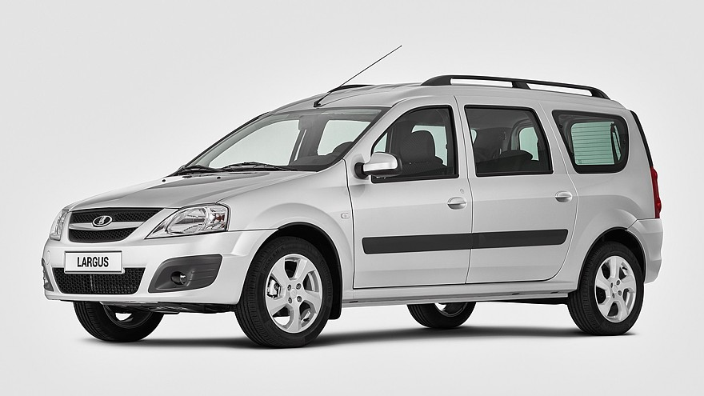
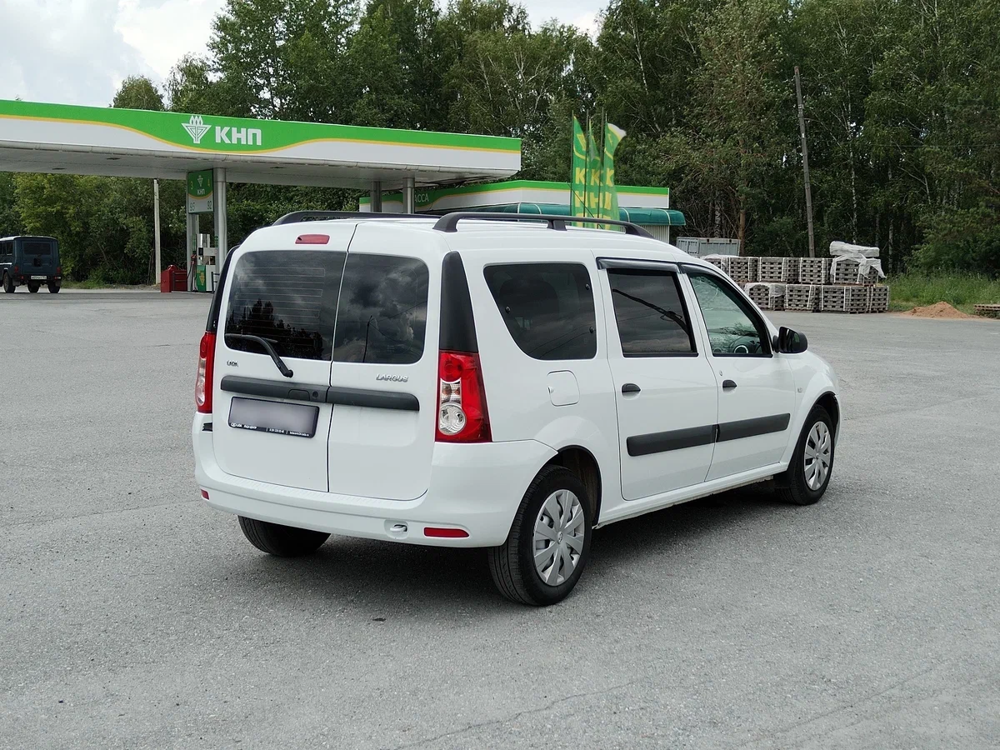
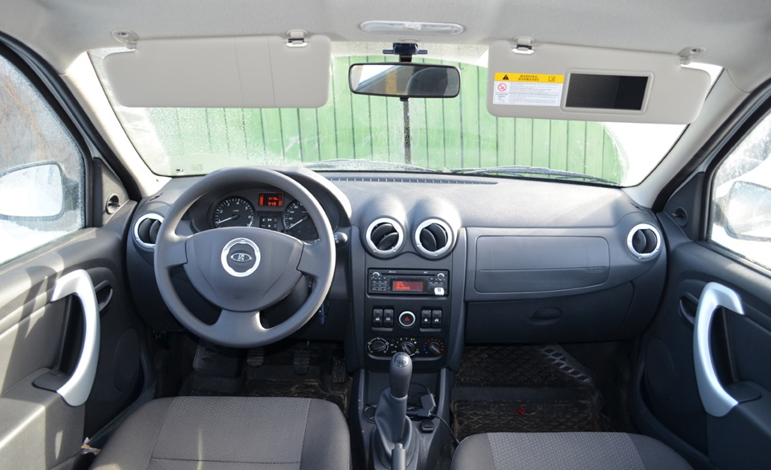
После рестайлинга:
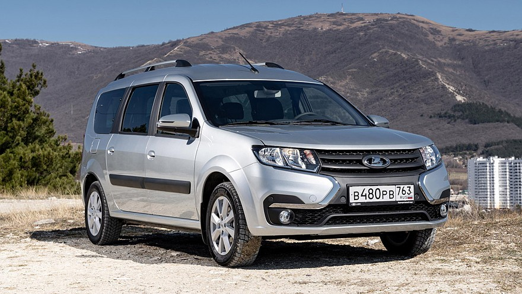
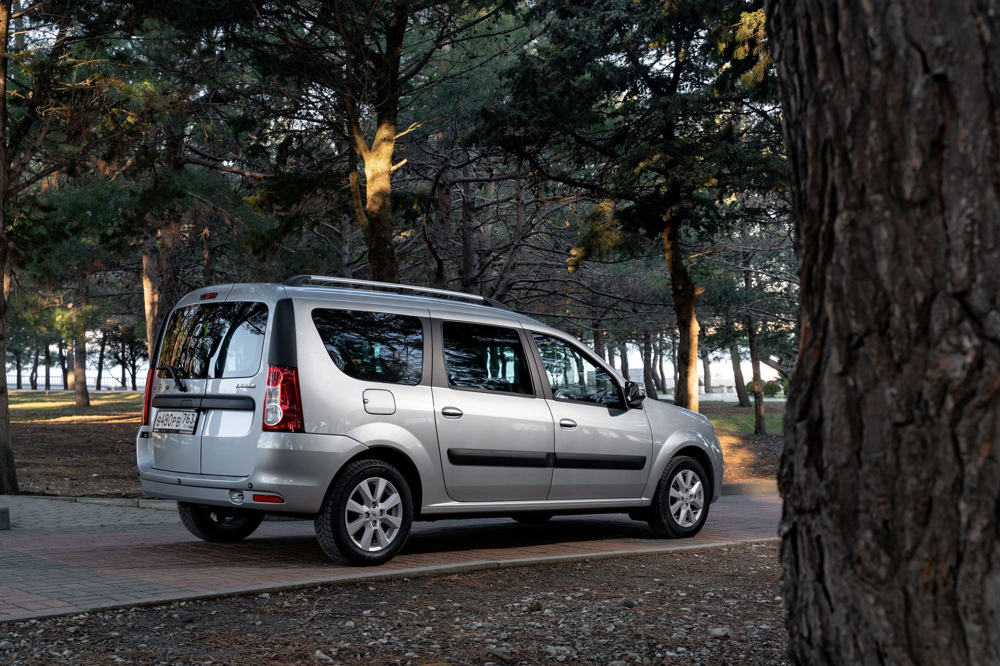
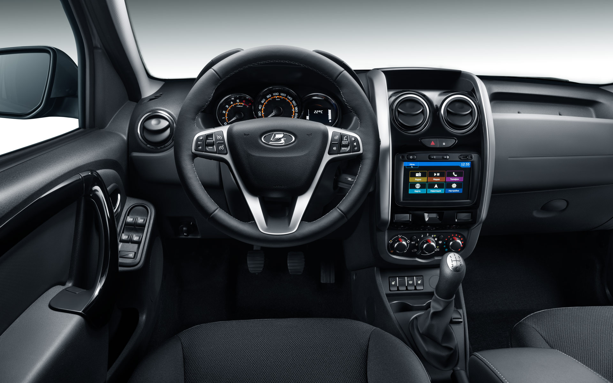
Версия Cross:
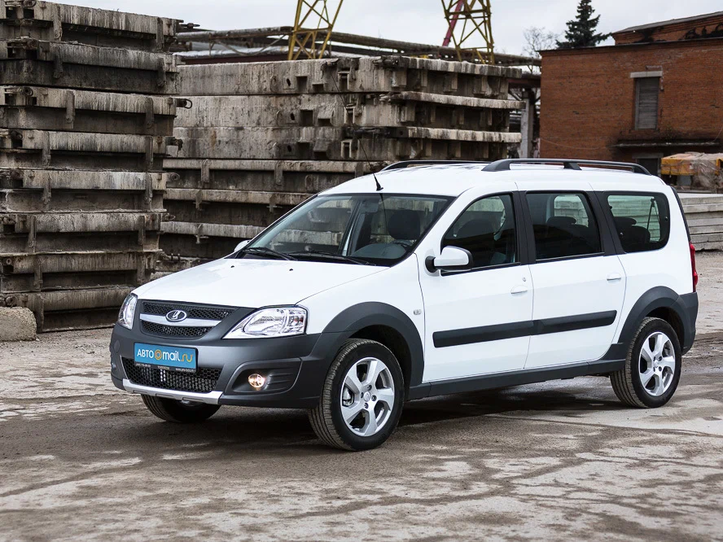
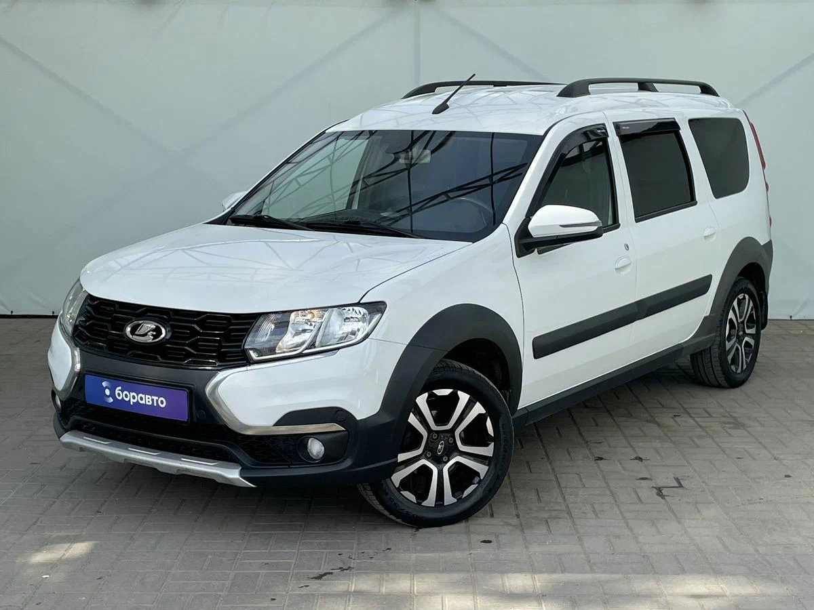
Остальные версии:
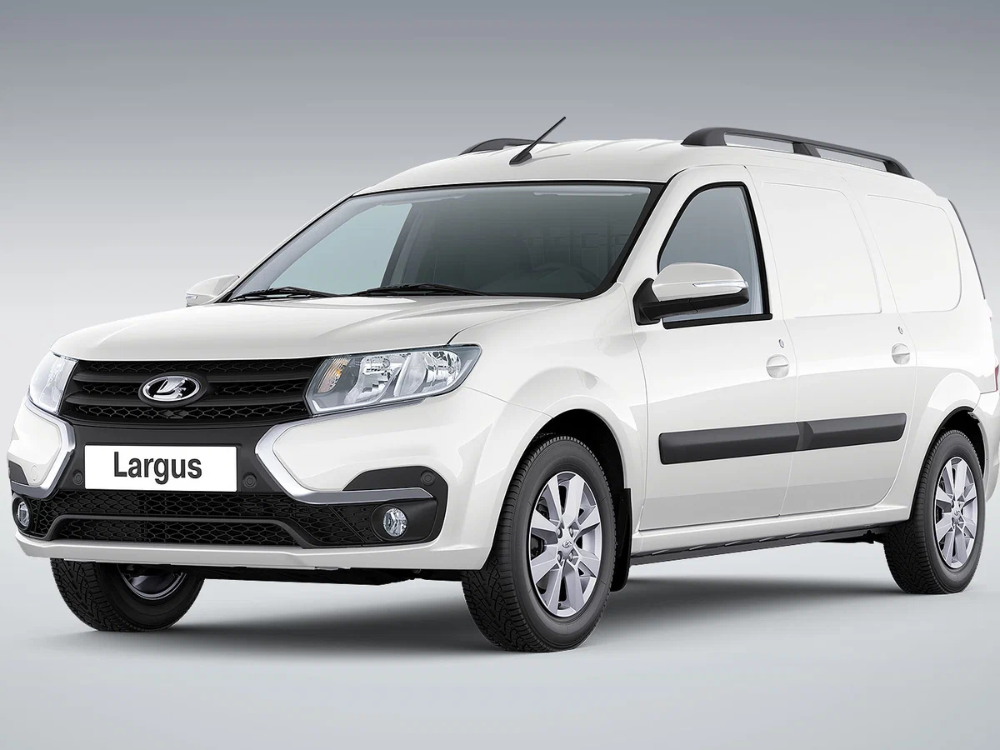
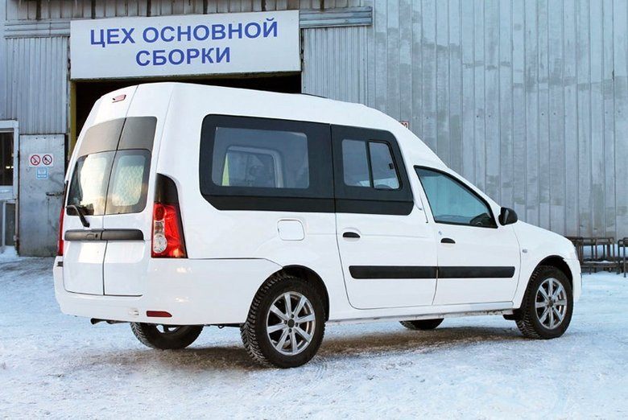